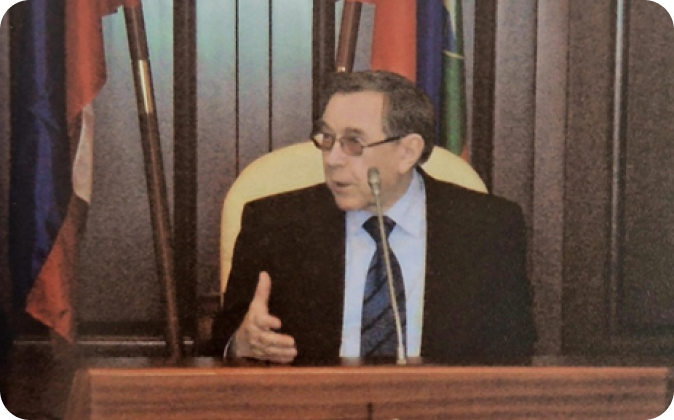
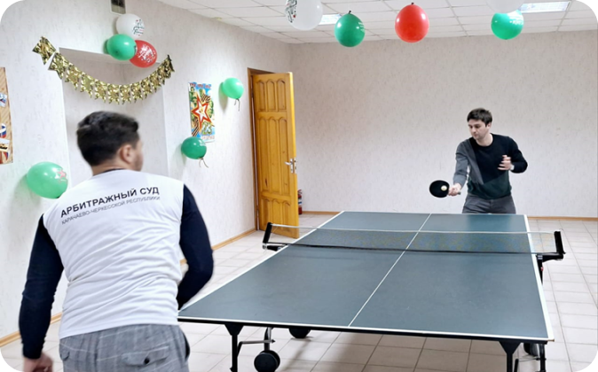

Создание коммерческих судов в России в современном понимании относится к 1808 году - году создания
коммерческого суда в Одессе. В 1932 году опубликовано Общее положение об учреждении коммерческих судов в
России. Именно тогда появилась система таких судов, которая стала прообразом нынешней системы.
После октябрьской революции, разногласия между предприятиями и организациями решали в административном
порядке вышестоящие органы управления. Но вследствие развития хозяйственных отношений возникла необходимость
в создании специального органа для рассмотрения споров между государственными предприятиями и организациями.
Таким образом, в 1922 году были организованы арбитражные комиссии. Ещё в PCФCP в них входили арбитражные
комиссии при областных экономических совещаниях (ЭКО СО) и Высшая арбитражная комиссия при Совете Труда и
Обороны (СТО). В дальнейшем после образования СССР были созданы арбитражные комиссии при совнаркомах
автономных социалистических республик, а также при исполкомах губерний и областей. Ведомственные арбитражные
комиссии были организованы в системе органов управления отдельными отраслями экономики.
С введением хозрасчета и договоров, как способа оформления хозяйственных связей, развивался и арбитраж. В
мае 1931 года для рассмотрения имущественных споров между предприятиями, организациями и учреждениями был
учрежден государственный арбитраж.
Таким образом, арбитраж с момента возникновения существовал в двух видах: государственный (разрешение споров
предприятий и организаций различного уровня подчинения) и ведомственный (разрешение споров предприятий и
организаций, подчиненных одному министерству, комитету и пр.). Арбитраж относился к системе органов
государственного управления.
Перед государством стоял вопрос о преобразовании системы устройства арбитража и приспособлении его к
меняющимся экономическим условиям. Так, принятие в 1960 году Положения «О государственном арбитраже при
Совете Министров СССР» упразднило действие предыдущего Положения «О государственном арбитраже» 1931
года.
17 января 1974 года Госарбитраж СССР претерпел изменения по новому Положению «О государственном арбитраже
при Совете Министров СССР» и стал союзно- республиканским органом. Позже арбитраж был признан
конституционным органом по Конституции СССР 1977 года.
В 1991-1992 годах были сделаны решающие шаги по прекращению деятельности ведомственного арбитража и
превращению органов Государственного арбитража в арбитражный суд.
17 мая 1991 года Верховный Совет СССР принял два закона, в корне изменивших деятельность арбитражных
органов: «О Высшем Арбитражном Суде СССР» и «О порядке разрешения хозяйственных споров Высшим Арбитражным
Судом СССР».
Был учрежден Высший Арбитражный Суд СССР, созданы коллегии по рассмотрению споров, а также Пленум Высшего
Арбитражного Суда СССР.
04 июля 1991 года Верховным Советом PСФСР был принят закон РСФСР «Об арбитражном суде», который вводился в
действие с 01 октября 1991 года. С принятием названного закона арбитражным судам становятся подведомственны
споры с участием граждан-предпринимателей.
В этих условиях главными регуляторами отношений собственности, производства и обмена между производителями и
потребителями продукции и товаров становятся закон и договор в их единстве и рыночной взаимосвязи. Именно с
формированием рыночных отношений возникла потребность в создании независимой судебной системы, специально
приспособленной для рассмотрения экономических споров между хозяйствующими субъектами.
С развитием судебно-арбитражной системы совершенствовалось и арбитражное процессуальное законодательство.
05 марта 1992 года вступил в силу первый Арбитражный процессуальный кодекс Российской Федерации. В тот
период система арбитражных судов состояла из судов субъектов Российской Федерации и Высшего Арбитражного
Суда Российской Федерации.
Система была трехуровневой: первая инстанция, кассационная инстанция, надзорная инстанция. B арбитражных
судах субъектов совмещались две инстанции: первая и кассационная.
В апреле 1995 года были приняты следующие законы: «Об арбитражных судах в Российской Федерации», Арбитражный
процессуальный кодекс Российской Федерации и закон «О введении в действие Арбитражного процессуального
кодекса Российской Федерации». Закон «Об арбитражных судах в Российской Федерации», вступивший в силу с 01
июля 1995 года, в частности, установил, что все арбитражные суды в Российской Федерации являются
федеральными судами и входят в ее судебную систему. В судах первой инстанции появились апелляционные
инстанции, которые пересматривали не вступившие в законную силу судебные акты.
Федеральный конституционный закон «Об арбитражных судах в Российской Федерации» 1995 года ввел в систему
арбитражных судов третий уровень – окружные федеральные суды, ставшие промежуточной инстанцией между судами
субъектов и Высшим Арбитражным Судом Российской Федерации. Они были созданы в очень короткие сроки. Следует
отметить такую особенность, что первые в новейшей истории России эти десять судов не связаны
административно-территориальным делением, избавлены от давления каких-либо местных властей. Это является
важнейшей гарантией независимости как всей судебной системы, так и осуществляемого правосудия.
Законность и обоснованность судебных актов Арбитражного суда Карачаево-Черкесской Республики, вступивших в
законную силу, проверял в кассационном порядке Федеральный арбитражный суд Северо-Кавказского округа (ныне
Арбитражный суд Северо-Кавказского округа), расположенный в г. Краснодаре Краснодарского края.
01 сентября 2002 года вступил в законную силу третий Арбитражный процессуальный кодекс Российской Федерации,
который значительно усовершенствовал и более тщательно урегулировал порядок арбитражного судопроизводства.
Следующим этапом совершенствования судебной системы стало выделение апелляционной инстанции в отдельное
звено арбитражной системы в виде арбитражного апелляционного суда.
Федеральный конституционный закон от 04 июля 2003 года №4-ФК3 «О внесении изменений и дополнений в
Федеральный конституционный закон «Об арбитражных судах в Российской Федерации» предусмотрел поэтапное
образование арбитражных апелляционных судов.
Арбитражный суд Карачаево-Черкесской Республики входит в юрисдикцию Шестнадцатого арбитражного
апелляционного суда, который проверяет в апелляционном порядке законность и обоснованность не вступивших в
законную силу судебных актов. Шестнадцатый арбитражный апелляционный суд образован 15 декабря 2006 года и
расположен в г. Ессентуки Ставропольского края.
Арбитражный суд Карачаево-Черкесской Республики
Председатели
Исторический обзор
История создания и развития Арбитражного суда
Карачаево-Черкесской Республики
История создания Арбитражного суда Карачаево-Черкесской Республики берет начало 24 апреля 1992 года, когда
на Х сессии Совет народных депутатов Карачаево-Черкесской автономной области принял решение об образовании
Высшего арбитражного суда Республики с избранием председателем суда Асланукова Хамзата Билялевича.
Образование суда совпало с решением вопросов становления государственности Карачаево-Черкесской Республики. Законом РСФСР от 03 июля 1991 года Карачаево-Черкесская автономная область была преобразована в Карачаево-Черкесскую Советскую Социалистическую Республику с последующим переименованием в Карачаево-Черкесскую Республику. Впоследствии вновь избранный Верховный совет Карачаево-Черкесской Республики своим решением от 22 января 1993 года №12-XXI подтвердил полномочия Высшего арбитражного суда Карачаево-Черкесской Республики.
Образование суда совпало с решением вопросов становления государственности Карачаево-Черкесской Республики. Законом РСФСР от 03 июля 1991 года Карачаево-Черкесская автономная область была преобразована в Карачаево-Черкесскую Советскую Социалистическую Республику с последующим переименованием в Карачаево-Черкесскую Республику. Впоследствии вновь избранный Верховный совет Карачаево-Черкесской Республики своим решением от 22 января 1993 года №12-XXI подтвердил полномочия Высшего арбитражного суда Карачаево-Черкесской Республики.
Деятельность арбитражного суда на начальном этапе становления сопровождалась значительными сложностями, так
как не было возможности создания суда на базе уже функционирующего органа государственного арбитража - ранее
споры рассматривались государственным арбитражем Ставропольского края, в состав которого входила до 1991
года Карачаево-Черкесская автономная область.
В первый состав Высшего арбитражного суда Карачаево-Черкесской Республики в соответствии со статьей 13 Закона РСФСР «Об арбитражном суде» и на основании решения Совета народных депутатов Карачаево-Черкесской автономной области от 19 августа 1992 года входили судьи: Байчорова Файруза Биляловна (работает по настоящее время) – заместитель председателя, Афаунова Татьяна Хамзатовна и Марчук Татьяна Ивановна. Таким образом, общая численность судей на момент создания суда составляла 4 человека.
В первый состав Высшего арбитражного суда Карачаево-Черкесской Республики в соответствии со статьей 13 Закона РСФСР «Об арбитражном суде» и на основании решения Совета народных депутатов Карачаево-Черкесской автономной области от 19 августа 1992 года входили судьи: Байчорова Файруза Биляловна (работает по настоящее время) – заместитель председателя, Афаунова Татьяна Хамзатовна и Марчук Татьяна Ивановна. Таким образом, общая численность судей на момент создания суда составляла 4 человека.
Здание «Дома Правосудия», в котором размещался Арбитражный суд КЧР
совместно с Верховным судом Республики по декабрь 2007 года
Изначально Высший арбитражный суд Карачаево-Черкесской Республики осуществлял свою деятельность по
адресу: Карачаево-Черкесская Республика, г. Черкесск, Дом Советов, каб. 31.
С 1992 по 1996 годы Арбитражный суд республики размещался по адресу: Карачаево-Черкесская Республика, г. Черкесск, ул. Ленина, д. 38, на первом этаже здания.
С 1996 года по 2007 год Высший арбитражный суд Карачаево-Черкесской Республики находился в здании «Дома Правосудия» совместно с Верховным судом Республики по адресу: Карачаево-Черкесская Республика, г. Черкесск, ул. Новая, 4, на 3 этаже (в настоящее время эта улица переименована на ул. Маджира Гаджаева, 4).
С 1992 по 1996 годы Арбитражный суд республики размещался по адресу: Карачаево-Черкесская Республика, г. Черкесск, ул. Ленина, д. 38, на первом этаже здания.
С 1996 года по 2007 год Высший арбитражный суд Карачаево-Черкесской Республики находился в здании «Дома Правосудия» совместно с Верховным судом Республики по адресу: Карачаево-Черкесская Республика, г. Черкесск, ул. Новая, 4, на 3 этаже (в настоящее время эта улица переименована на ул. Маджира Гаджаева, 4).
Судейский корпус (Пять лет со дня образования суда).
23 января 1993 года в соответствии с постановлением Верховного Совета Карачаево-Черкесской Республики
судьями арбитражного суда избраны Адзинова Маргарита Евгеньевна и Теунаев Таусултан Азретович. Спустя
год, постановлением Верховного Совета Карачаево-Черкесской Республики от 03 февраля 1994 года избраны
судьи: Кукоев Асан Асхадович, Карабанов Виктор Борисович, Хутов Темур Леонович (работает по настоящее
время).
Свою деятельность Высший арбитражный суд Карачаево-Черкесской Республики (как и другие суды субъектов
России) начал в соответствии с нормами первого Арбитражного процессуального кодекса Российской Федерации,
который вступил в силу 05 марта 1992 года.
В Высшем арбитражном суде Карачаево-Черкесской Республики совмещались две инстанции: первая и кассационная. В те годы кассационная инстанция проверяла законность и обоснованность судебных актов, не вступивших в законную силу. С принятием 05 апреля 1995 года нового Арбитражного процессуального кодекса Российской Федерации, а также Федерального конституционного Закона «Об арбитражных судах в Российской Федерации» от 28 апреля 1995 года все суды субъектов Российской Федерации (республик, краев, областей) получили статус федеральных арбитражных судов.
С тех пор Арбитражный суд Карачаево-Черкесской Республики является федеральным арбитражным судом первого уровня.
В суде была образована апелляционная инстанция, председателем которой была утверждена Байчорова Файруза Биляловна.
Изменился и порядок назначения федеральных судей на должность. В соответствии с Указом Президента Российской Федерации на должность судьи Арбитражного суда Карачаево-Черкесской Республики назначена Жолудева Вера Федотовна (Указ от 09 января 1999 года №46). Впоследствии, судьи Марчук Т.И. и Жолудева В.Ф. были назначены судьями в более крупные арбитражные суды: Марчук Т.И. - в Арбитражный суд Краснодарского края, а Жолудева В.Ф. - в Арбитражный суд Ставропольского края.
Вплоть до 2002 года судейский корпус, а также аппарат суда был малочисленным.
С 2002 года число судей увеличилось почти вдвое. Указами Президента Российской Федерации на должности судей назначены: Лазаренко Лилия Борисовна - Указ от 13 февраля 2002 года №166; Семенов Мирлан Умарович - Указ от 22 августа 2002 года №909; Шишканов Дмитрий Геннадиевич - Указ от 04 апреля 2003 года №272; Дышекова Ариза Сагдудиновна - Указ от 11 августа 2003 года №954; Гришин Сергей Владимирович - Указ от 18 мая 2005 года №544; Калмыкова Мадина Юрьевна - Указ от 11 марта 2006 года №195; Тебуева Зейтуна Хусеевна - Указ от 11 марта 2006 года №195: Биджиева Рамила Магомедовна – Указ от 05 апреля 2010 года №418; Боташев Али Пилялович - Указ от 26 июля 2011 года №1005.
В Высшем арбитражном суде Карачаево-Черкесской Республики совмещались две инстанции: первая и кассационная. В те годы кассационная инстанция проверяла законность и обоснованность судебных актов, не вступивших в законную силу. С принятием 05 апреля 1995 года нового Арбитражного процессуального кодекса Российской Федерации, а также Федерального конституционного Закона «Об арбитражных судах в Российской Федерации» от 28 апреля 1995 года все суды субъектов Российской Федерации (республик, краев, областей) получили статус федеральных арбитражных судов.
С тех пор Арбитражный суд Карачаево-Черкесской Республики является федеральным арбитражным судом первого уровня.
В суде была образована апелляционная инстанция, председателем которой была утверждена Байчорова Файруза Биляловна.
Изменился и порядок назначения федеральных судей на должность. В соответствии с Указом Президента Российской Федерации на должность судьи Арбитражного суда Карачаево-Черкесской Республики назначена Жолудева Вера Федотовна (Указ от 09 января 1999 года №46). Впоследствии, судьи Марчук Т.И. и Жолудева В.Ф. были назначены судьями в более крупные арбитражные суды: Марчук Т.И. - в Арбитражный суд Краснодарского края, а Жолудева В.Ф. - в Арбитражный суд Ставропольского края.
Вплоть до 2002 года судейский корпус, а также аппарат суда был малочисленным.
С 2002 года число судей увеличилось почти вдвое. Указами Президента Российской Федерации на должности судей назначены: Лазаренко Лилия Борисовна - Указ от 13 февраля 2002 года №166; Семенов Мирлан Умарович - Указ от 22 августа 2002 года №909; Шишканов Дмитрий Геннадиевич - Указ от 04 апреля 2003 года №272; Дышекова Ариза Сагдудиновна - Указ от 11 августа 2003 года №954; Гришин Сергей Владимирович - Указ от 18 мая 2005 года №544; Калмыкова Мадина Юрьевна - Указ от 11 марта 2006 года №195; Тебуева Зейтуна Хусеевна - Указ от 11 марта 2006 года №195: Биджиева Рамила Магомедовна – Указ от 05 апреля 2010 года №418; Боташев Али Пилялович - Указ от 26 июля 2011 года №1005.
Мероприятие, посвященное презентации нового здания суда и 15-летию со
дня образования суда (апрель 2008 года)
Судейский корпус и работники аппарата Арбитражного суда КЧР
(Пятнадцать лет со дня образования суда)
В апреле 2005 года первый председатель Арбитражного суда Карачаево-Черкесской Республики Аслануков Хамзат
Билялевич был освобожден от должности председателя в связи с уходом в почетную отставку.
Приказом Высшего Арбитражного Суда Российской Федерации от 04 апреля 2005 года №87КС обязанности
председателя Арбитражного суда Карачаево-Черкесской Республики были возложены на Байчорову Файрузу
Биляловну.
С 14 февраля 2006 года вступил в должность председателя Арбитражного суда Карачаево-Черкесской Республики Жолудев Иван Степанович, назначенный Указом Президента Российской Федерации от 31 января 2006 года №61. В связи с развитием арбитражного процессуального законодательства, вступлением в действие третьего Арбитражного процессуального кодекса Российской Федерации, образованием в системе арбитражных судов апелляционных судов, преобразована и усовершенствована структура Арбитражного суда Карачаево-Черкесской Республики.
В 2006 году в Арбитражном суде Карачаево-Черкесской Республики образованы два судебных состава: судебный состав по рассмотрению экономических споров, возникающих из гражданских правоотношений и судебный состав по рассмотрению споров, возникающих из административных правоотношений.
В рамках Федеральной целевой программы «Развитие судебной системы России» в 2008 году введено в эксплуатацию новое административное здание Арбитражного суда Карачаево-Черкесской Республики, расположенного в центре города Черкесска, по адресу: Карачаево-Черкесская Республика, г. Черкесск, проспект Ленина, дом 9. Здание имеет четыре зала судебных заседаний с холлами для представителей участников процесса, а также конференц-зал (Зал Президиума). Здание оснащено современными инженерными системами, в том числе: телефонии, безопасности, кондиционирования, локальной компьютерной сетью, видеоконференц-связью, аудио - аппаратурой.
С 14 февраля 2006 года вступил в должность председателя Арбитражного суда Карачаево-Черкесской Республики Жолудев Иван Степанович, назначенный Указом Президента Российской Федерации от 31 января 2006 года №61. В связи с развитием арбитражного процессуального законодательства, вступлением в действие третьего Арбитражного процессуального кодекса Российской Федерации, образованием в системе арбитражных судов апелляционных судов, преобразована и усовершенствована структура Арбитражного суда Карачаево-Черкесской Республики.
В 2006 году в Арбитражном суде Карачаево-Черкесской Республики образованы два судебных состава: судебный состав по рассмотрению экономических споров, возникающих из гражданских правоотношений и судебный состав по рассмотрению споров, возникающих из административных правоотношений.
В рамках Федеральной целевой программы «Развитие судебной системы России» в 2008 году введено в эксплуатацию новое административное здание Арбитражного суда Карачаево-Черкесской Республики, расположенного в центре города Черкесска, по адресу: Карачаево-Черкесская Республика, г. Черкесск, проспект Ленина, дом 9. Здание имеет четыре зала судебных заседаний с холлами для представителей участников процесса, а также конференц-зал (Зал Президиума). Здание оснащено современными инженерными системами, в том числе: телефонии, безопасности, кондиционирования, локальной компьютерной сетью, видеоконференц-связью, аудио - аппаратурой.
Мероприятие, посвященное презентации нового здания суда и 15-летию со
дня образования суда (апрель 2008 года)
Конференц-зал (зал Президиума)
Зал судебных заседаний (фото 2008 года)
Зал для проведения видеоконференц-связи
Для удобства и информирования посетителей суда в холлах здания суда размещены информационные панели с
расписанием судебных заседаний текущего дня, кроме того в холлах второго и третьего этажей имеются
мини-киоски с текущей информацией о ходе судебных заседаний в каждом из залов заседаний. Общая информация в
доступном виде имеется в информационных киосках, расположенных на первом, втором и третьем этажах.
Для удобства лиц участвующих в судебных заседаниях, холлы второго и третьего этажей здания суда оснащены
беспроводной сетью Интернет «WI-FI». Все залы судебных заседаний оснащены необходимыми средствами для
ведения аудиозаписи судебных заседаний.
Конференц-зал (зал Президиума)
Зал судебных заседаний (фото 2008 года)
Зал для проведения видеоконференц-связи
Арбитражным судом Карачаево-Черкесской Республики успешно применяются Интернет-технологии в арбитражном
процессе.
На официальном сайте суда - http://www.askchr.arbit.ru - функционирует система поиска и просмотра информации о рассматриваемом деле, его текущем статусе, процессуальных сроках и датах рассмотрения, графике назначенных судебных заседаний, принятых судебных актах.
Исковое заявление может быть подано в арбитражный суд посредством заполнения формы, размещенной на официальном сайте суда в сети Интернет. Таким же способом могут направляться жалобы и заявления в апелляционную, кассационную и надзорную инстанции. Стороны вправе представлять в арбитражный суд документы в электронном виде, заполнять формы документов, размещенных на официальном сайте арбитражного суда в сети Интернет.
Лица, участвующие в деле, и иные участники арбитражного процесса получили возможность участвовать в судебном заседании путем использования систем видеоконференц-связи при условии заявления ими ходатайства об этом и при наличии в арбитражных судах технической возможности осуществления такой связи. В Арбитражном суде Карачаево-Черкесской Республики имеется два зала судебных заседаний, оснащенные аппаратурой для проведения видеоконференц-связи.
На официальном сайте суда - http://www.askchr.arbit.ru - функционирует система поиска и просмотра информации о рассматриваемом деле, его текущем статусе, процессуальных сроках и датах рассмотрения, графике назначенных судебных заседаний, принятых судебных актах.
Исковое заявление может быть подано в арбитражный суд посредством заполнения формы, размещенной на официальном сайте суда в сети Интернет. Таким же способом могут направляться жалобы и заявления в апелляционную, кассационную и надзорную инстанции. Стороны вправе представлять в арбитражный суд документы в электронном виде, заполнять формы документов, размещенных на официальном сайте арбитражного суда в сети Интернет.
Лица, участвующие в деле, и иные участники арбитражного процесса получили возможность участвовать в судебном заседании путем использования систем видеоконференц-связи при условии заявления ими ходатайства об этом и при наличии в арбитражных судах технической возможности осуществления такой связи. В Арбитражном суде Карачаево-Черкесской Республики имеется два зала судебных заседаний, оснащенные аппаратурой для проведения видеоконференц-связи.
Посещение Арбитражного суда КЧР Председателем Высшего Арбитражного Суда
Российской Федерации
Ивановым Антоном Александровичем (май 2008 года)

Посещение Арбитражного суда КЧР советником Президента Российской
Федерации,
(Председателем Высшего Арбитражного Суда Российской Федерации в почетной отставке)
Яковлевым Вениамином Федоровичем (май 2009 года)
Указом Президента Российской Федерации от 01 июля 2009 года №733 судья Дышекова Ариза Сагдудиновна назначена
заместителем председателя Арбитражного суда Карачаево-Черкесской Республики.
31 июля 2010 года Указом Президента Российской Федерации №960 судья Арбитражного суда Карачаево-Черкесской
Республики Семенов Мирлан Умарович был назначен на должность заместителя председателя Шестнадцатого
арбитражного апелляционного суда.
С развитием арбитражного процессуального законодательства, вступлением в действие нового, третьего Арбитражного процессуального кодекса Российской Федерации, а также образованием в системе арбитражных судов апелляционных судов, преобразована и усовершенствована структура Арбитражного суда Карачаево-Черкесской Республики.
В штат суда введена единица руководителя аппарата администратора суда, сформировано 5 отделов: финансово-хозяйственный отдел; отдел кадров и государственной службы; отдел анализа и обобщения судебной практики; законодательства и статистики; отдел информатизации и связи; отдел делопроизводства. В Арбитражном суде Карачаево-Черкесской Республики действует децентрализованная система, также именуемая системой «офис судьи». Все операции с делами осуществляются помощником судьи и секретарем судебного заседания, которые составляют в совокупности «офис» каждого конкретного судьи.
С развитием арбитражного процессуального законодательства, вступлением в действие нового, третьего Арбитражного процессуального кодекса Российской Федерации, а также образованием в системе арбитражных судов апелляционных судов, преобразована и усовершенствована структура Арбитражного суда Карачаево-Черкесской Республики.
В штат суда введена единица руководителя аппарата администратора суда, сформировано 5 отделов: финансово-хозяйственный отдел; отдел кадров и государственной службы; отдел анализа и обобщения судебной практики; законодательства и статистики; отдел информатизации и связи; отдел делопроизводства. В Арбитражном суде Карачаево-Черкесской Республики действует децентрализованная система, также именуемая системой «офис судьи». Все операции с делами осуществляются помощником судьи и секретарем судебного заседания, которые составляют в совокупности «офис» каждого конкретного судьи.
Администратор суда и начальники структурных подразделений (фото 2012
года)
Офис судьи Калмыковой М.Ю. (фото 2012 года)
В 2011 году в почетную отставку вышли судьи Арбитражного суда Карачаево-Черкесской Республики: Афаунова
Татьяна Хамзатовна, Адзинова Маргарита Евгеньевна, Кукоев Асан Асхадович, Карабанов Виктор Борисович.
С 8 июля 2011 года председатель Арбитражного суда Карачаево-Черкесской Республики Жолудев Иван Степанович был освобожден от должности председателя в связи с уходом в почетную отставку.
С 8 июля 2011 года председатель Арбитражного суда Карачаево-Черкесской Республики Жолудев Иван Степанович был освобожден от должности председателя в связи с уходом в почетную отставку.
Проводы в почетную отставку судей: Афауновой Т.Х., Адзиновой М.Е.,
Кукоева А.А., Карабанова В.Б (апрель 2011 года)
Проводы в почетную отставку председателя суда Ивана Степановича
Жолудева (2011 год)
Приказом Высшего Арбитражного Суда Российской Федерации от 05 июля 2011 года №342КС обязанности председателя
Арбитражного суда Карачаево-Черкесской Республики были возложены на Байчорову Файрузу Биляловну.
Указом Президента Российской Федерации от 17 декабря 2011 года №1660 Мельников Игорь Михайлович назначен на
должность председателя Арбитражного суда Карачаево-Черкесской Республики.
Законом Российской Федерации о поправке к Конституции Российской Федерации от 05.02.2014 №2-ФКЗ «О Верховном Суде Российской Федерации и прокуратуре Российской Федерации» Высший Арбитражный Суд Российской Федерации упразднен, а вопросы осуществления правосудия, отнесенные к его ведению, переданы в юрисдикцию Верховного Суда Российской Федерации. К августу 2014 года завершилось объединение Верховного Суда Российской Федерации и Высшего Арбитражного Суда Российской Федерации, в результате которого появился объединенный Верховный Суд Российской Федерации.
Приказом Верховного Суда Российской Федерации от 01 сентября 2022 года №90КД/70 обязанности председателя Арбитражного суда Карачаево-Черкесской Республики были возложены на Боташева Али Пиляловича.
Указом Президента Российской Федерации от 27 сентября 2023 года №723 «О назначении судей федеральных судов и о представителях Президента Российской Федерации в квалификационных коллегиях судей субъектов Российской Федерации» председателем Арбитражного суда Карачаево-Черкесской Республики на 6-летний срок полномочий назначена Негрий Наталья Сергеевна.
В настоящее время в штате Арбитражного суда Карачаево-Черкесской Республики 13 судей, включая председателя суда и заместителей председателя суда, действуют две судебные коллегии (судебных состава): судебная коллегия (судебный состав) по рассмотрению экономических споров, возникающих из гражданских и иных правоотношений и судебная коллегия (судебный состав) по рассмотрению споров, возникающих из административных и иных публичных правоотношений, также имеется 5 отделов: финансово-хозяйственный отдел; отдел кадров и государственной службы; отдел судебной статистики и правовой информатизации, кодификации и систематизации законодательства; отдел делопроизводства; отдел обеспечения судопроизводства.
Судьи Арбитражного суда Карачаево-Черкесской Республики активно участвуют в работе органов судейского сообщества: Совета судей Карачаево-Черкесской Республики, Квалификационной коллегии судей Карачаево-Черкесской Республики, Комиссии по приему квалификационного экзамена на должность судьи.
Судейский состав и аппарат суда награждены государственными и ведомственными наградами.
Внедрение высоких технологий в повседневную деятельность Арбитражного суда Карачаево-Черкесской Республики прошло весьма успешно. На сегодняшний день стабильно поддерживается высокий уровень информационной открытости, что способствует доступности правосудия в регионе. В системе арбитражных судов применяется комплекс интегрированных программно-технических средств, включающих системы автоматизации судопроизводства, информационные системы «Мой арбитр», «Картотека арбитражных дел» и «Банк решений арбитражных судов». Стороны имеют возможность дистанционно подавать исковые заявления, направлять жалобы и заявления в апелляционную, кассационную и надзорную инстанции, функционирует система поиска и просмотра информации о рассматриваемом в суде деле, а также стороны имеют техническую возможность участвовать в судебном заседании путем использования систем видеоконференц-связи и веб-конференции. С 2020 года сторонам в Арбитражном суде Карачаево-Черкесской Республики доступна система онлайн-ознакомления с материалами дела, посредством которой возможно ознакомление в электронном виде с материалами дела.
Использование современных информационных технологий – это большое достижение арбитражной системы, а также доступный для участников арбитражного процесса функционал электронного правосудия.
В Арбитражном суде Карачаево-Черкесской Республики рассматривается порядка 3-х тысяч дел в год, и с каждым годом эта цифра только растет. За весь период работы Арбитражным судом Карачаево-Черкесской Республики было рассмотрено свыше 64 000 дел.
В своей работе Арбитражный суд Карачаево-Черкесской Республики тесно взаимодействует с Шестнадцатым арбитражным апелляционном судом, расположенным в г. Ессентуки Ставропольского края, осуществляющим проверку законности и обоснованности не вступивших в законную силу судебных актов арбитражных судов субъектов Российской Федерации, входящих в Северо-Кавказский федеральный округ.
Кассационные жалобы на вступившие в законную силу судебные акты Арбитражного суда Карачаево-Черкесской Республики и на постановления Шестнадцатого арбитражного апелляционного суда рассматриваются в порядке кассационного производства Арбитражным судом Северо-Кавказского округа.
В Арбитражном суде Карачаево-Черкесской Республики принимаются все меры для обеспечения надлежащих условий отправления правосудия, так как открытость и доступность правосудия является важнейшим направлением государственной политики в современной России, обеспечивающим долговременное и конструктивное взаимодействие судебной власти и общества.
Обращение в суд является эффективным механизмом защиты нарушенных прав и свобод заинтересованных лиц. Возможность получения достоверной информации о деятельности суда, доступность и прозрачность правосудия нацелены на популяризацию знаний о российской судебной системе, открытости и авторитета судебной власти.
Законом Российской Федерации о поправке к Конституции Российской Федерации от 05.02.2014 №2-ФКЗ «О Верховном Суде Российской Федерации и прокуратуре Российской Федерации» Высший Арбитражный Суд Российской Федерации упразднен, а вопросы осуществления правосудия, отнесенные к его ведению, переданы в юрисдикцию Верховного Суда Российской Федерации. К августу 2014 года завершилось объединение Верховного Суда Российской Федерации и Высшего Арбитражного Суда Российской Федерации, в результате которого появился объединенный Верховный Суд Российской Федерации.
Приказом Верховного Суда Российской Федерации от 01 сентября 2022 года №90КД/70 обязанности председателя Арбитражного суда Карачаево-Черкесской Республики были возложены на Боташева Али Пиляловича.
Указом Президента Российской Федерации от 27 сентября 2023 года №723 «О назначении судей федеральных судов и о представителях Президента Российской Федерации в квалификационных коллегиях судей субъектов Российской Федерации» председателем Арбитражного суда Карачаево-Черкесской Республики на 6-летний срок полномочий назначена Негрий Наталья Сергеевна.
В настоящее время в штате Арбитражного суда Карачаево-Черкесской Республики 13 судей, включая председателя суда и заместителей председателя суда, действуют две судебные коллегии (судебных состава): судебная коллегия (судебный состав) по рассмотрению экономических споров, возникающих из гражданских и иных правоотношений и судебная коллегия (судебный состав) по рассмотрению споров, возникающих из административных и иных публичных правоотношений, также имеется 5 отделов: финансово-хозяйственный отдел; отдел кадров и государственной службы; отдел судебной статистики и правовой информатизации, кодификации и систематизации законодательства; отдел делопроизводства; отдел обеспечения судопроизводства.
Судьи Арбитражного суда Карачаево-Черкесской Республики активно участвуют в работе органов судейского сообщества: Совета судей Карачаево-Черкесской Республики, Квалификационной коллегии судей Карачаево-Черкесской Республики, Комиссии по приему квалификационного экзамена на должность судьи.
Судейский состав и аппарат суда награждены государственными и ведомственными наградами.
Внедрение высоких технологий в повседневную деятельность Арбитражного суда Карачаево-Черкесской Республики прошло весьма успешно. На сегодняшний день стабильно поддерживается высокий уровень информационной открытости, что способствует доступности правосудия в регионе. В системе арбитражных судов применяется комплекс интегрированных программно-технических средств, включающих системы автоматизации судопроизводства, информационные системы «Мой арбитр», «Картотека арбитражных дел» и «Банк решений арбитражных судов». Стороны имеют возможность дистанционно подавать исковые заявления, направлять жалобы и заявления в апелляционную, кассационную и надзорную инстанции, функционирует система поиска и просмотра информации о рассматриваемом в суде деле, а также стороны имеют техническую возможность участвовать в судебном заседании путем использования систем видеоконференц-связи и веб-конференции. С 2020 года сторонам в Арбитражном суде Карачаево-Черкесской Республики доступна система онлайн-ознакомления с материалами дела, посредством которой возможно ознакомление в электронном виде с материалами дела.
Использование современных информационных технологий – это большое достижение арбитражной системы, а также доступный для участников арбитражного процесса функционал электронного правосудия.
В Арбитражном суде Карачаево-Черкесской Республики рассматривается порядка 3-х тысяч дел в год, и с каждым годом эта цифра только растет. За весь период работы Арбитражным судом Карачаево-Черкесской Республики было рассмотрено свыше 64 000 дел.
В своей работе Арбитражный суд Карачаево-Черкесской Республики тесно взаимодействует с Шестнадцатым арбитражным апелляционном судом, расположенным в г. Ессентуки Ставропольского края, осуществляющим проверку законности и обоснованности не вступивших в законную силу судебных актов арбитражных судов субъектов Российской Федерации, входящих в Северо-Кавказский федеральный округ.
Кассационные жалобы на вступившие в законную силу судебные акты Арбитражного суда Карачаево-Черкесской Республики и на постановления Шестнадцатого арбитражного апелляционного суда рассматриваются в порядке кассационного производства Арбитражным судом Северо-Кавказского округа.
В Арбитражном суде Карачаево-Черкесской Республики принимаются все меры для обеспечения надлежащих условий отправления правосудия, так как открытость и доступность правосудия является важнейшим направлением государственной политики в современной России, обеспечивающим долговременное и конструктивное взаимодействие судебной власти и общества.
Обращение в суд является эффективным механизмом защиты нарушенных прав и свобод заинтересованных лиц. Возможность получения достоверной информации о деятельности суда, доступность и прозрачность правосудия нацелены на популяризацию знаний о российской судебной системе, открытости и авторитета судебной власти.
Наши традиции
Приказом Высшего Арбитражного Суда Российской Федерации от 05 июля 2011 года №342КС обязанности председателя
Арбитражного суда Карачаево-Черкесской Республики были возложены на Байчорову Файрузу Биляловну.
Указом Президента Российской Федерации от 17 декабря 2011 года №1660 Мельников Игорь Михайлович назначен на
должность председателя Арбитражного суда Карачаево-Черкесской Республики.
Законом Российской Федерации о поправке к Конституции Российской Федерации от 05.02.2014 №2-ФКЗ «О Верховном Суде Российской Федерации и прокуратуре Российской Федерации» Высший Арбитражный Суд Российской Федерации упразднен, а вопросы осуществления правосудия, отнесенные к его ведению, переданы в юрисдикцию Верховного Суда Российской Федерации. К августу 2014 года завершилось объединение Верховного Суда Российской Федерации и Высшего Арбитражного Суда Российской Федерации, в результате которого появился объединенный Верховный Суд Российской Федерации.
Приказом Верховного Суда Российской Федерации от 01 сентября 2022 года №90КД/70 обязанности председателя Арбитражного суда Карачаево-Черкесской Республики были возложены на Боташева Али Пиляловича.
Указом Президента Российской Федерации от 27 сентября 2023 года №723 «О назначении судей федеральных судов и о представителях Президента Российской Федерации в квалификационных коллегиях судей субъектов Российской Федерации» председателем Арбитражного суда Карачаево-Черкесской Республики на 6-летний срок полномочий назначена Негрий Наталья Сергеевна.
В настоящее время в штате Арбитражного суда Карачаево-Черкесской Республики 13 судей, включая председателя суда и заместителей председателя суда, действуют две судебные коллегии (судебных состава): судебная коллегия (судебный состав) по рассмотрению экономических споров, возникающих из гражданских и иных правоотношений и судебная коллегия (судебный состав) по рассмотрению споров, возникающих из административных и иных публичных правоотношений, также имеется 5 отделов: финансово-хозяйственный отдел; отдел кадров и государственной службы; отдел судебной статистики и правовой информатизации, кодификации и систематизации законодательства; отдел делопроизводства; отдел обеспечения судопроизводства.
Судьи Арбитражного суда Карачаево-Черкесской Республики активно участвуют в работе органов судейского сообщества: Совета судей Карачаево-Черкесской Республики, Квалификационной коллегии судей Карачаево-Черкесской Республики, Комиссии по приему квалификационного экзамена на должность судьи.
Судейский состав и аппарат суда награждены государственными и ведомственными наградами.
Внедрение высоких технологий в повседневную деятельность Арбитражного суда Карачаево-Черкесской Республики прошло весьма успешно. На сегодняшний день стабильно поддерживается высокий уровень информационной открытости, что способствует доступности правосудия в регионе. В системе арбитражных судов применяется комплекс интегрированных программно-технических средств, включающих системы автоматизации судопроизводства, информационные системы «Мой арбитр», «Картотека арбитражных дел» и «Банк решений арбитражных судов». Стороны имеют возможность дистанционно подавать исковые заявления, направлять жалобы и заявления в апелляционную, кассационную и надзорную инстанции, функционирует система поиска и просмотра информации о рассматриваемом в суде деле, а также стороны имеют техническую возможность участвовать в судебном заседании путем использования систем видеоконференц-связи и веб-конференции. С 2020 года сторонам в Арбитражном суде Карачаево-Черкесской Республики доступна система онлайн-ознакомления с материалами дела, посредством которой возможно ознакомление в электронном виде с материалами дела.
Использование современных информационных технологий – это большое достижение арбитражной системы, а также доступный для участников арбитражного процесса функционал электронного правосудия.
В Арбитражном суде Карачаево-Черкесской Республики рассматривается порядка 3-х тысяч дел в год, и с каждым годом эта цифра только растет. За весь период работы Арбитражным судом Карачаево-Черкесской Республики было рассмотрено свыше 64 000 дел.
В своей работе Арбитражный суд Карачаево-Черкесской Республики тесно взаимодействует с Шестнадцатым арбитражным апелляционном судом, расположенным в г. Ессентуки Ставропольского края, осуществляющим проверку законности и обоснованности не вступивших в законную силу судебных актов арбитражных судов субъектов Российской Федерации, входящих в Северо-Кавказский федеральный округ.
Кассационные жалобы на вступившие в законную силу судебные акты Арбитражного суда Карачаево-Черкесской Республики и на постановления Шестнадцатого арбитражного апелляционного суда рассматриваются в порядке кассационного производства Арбитражным судом Северо-Кавказского округа.
В Арбитражном суде Карачаево-Черкесской Республики принимаются все меры для обеспечения надлежащих условий отправления правосудия, так как открытость и доступность правосудия является важнейшим направлением государственной политики в современной России, обеспечивающим долговременное и конструктивное взаимодействие судебной власти и общества.
Обращение в суд является эффективным механизмом защиты нарушенных прав и свобод заинтересованных лиц. Возможность получения достоверной информации о деятельности суда, доступность и прозрачность правосудия нацелены на популяризацию знаний о российской судебной системе, открытости и авторитета судебной власти.
Законом Российской Федерации о поправке к Конституции Российской Федерации от 05.02.2014 №2-ФКЗ «О Верховном Суде Российской Федерации и прокуратуре Российской Федерации» Высший Арбитражный Суд Российской Федерации упразднен, а вопросы осуществления правосудия, отнесенные к его ведению, переданы в юрисдикцию Верховного Суда Российской Федерации. К августу 2014 года завершилось объединение Верховного Суда Российской Федерации и Высшего Арбитражного Суда Российской Федерации, в результате которого появился объединенный Верховный Суд Российской Федерации.
Приказом Верховного Суда Российской Федерации от 01 сентября 2022 года №90КД/70 обязанности председателя Арбитражного суда Карачаево-Черкесской Республики были возложены на Боташева Али Пиляловича.
Указом Президента Российской Федерации от 27 сентября 2023 года №723 «О назначении судей федеральных судов и о представителях Президента Российской Федерации в квалификационных коллегиях судей субъектов Российской Федерации» председателем Арбитражного суда Карачаево-Черкесской Республики на 6-летний срок полномочий назначена Негрий Наталья Сергеевна.
В настоящее время в штате Арбитражного суда Карачаево-Черкесской Республики 13 судей, включая председателя суда и заместителей председателя суда, действуют две судебные коллегии (судебных состава): судебная коллегия (судебный состав) по рассмотрению экономических споров, возникающих из гражданских и иных правоотношений и судебная коллегия (судебный состав) по рассмотрению споров, возникающих из административных и иных публичных правоотношений, также имеется 5 отделов: финансово-хозяйственный отдел; отдел кадров и государственной службы; отдел судебной статистики и правовой информатизации, кодификации и систематизации законодательства; отдел делопроизводства; отдел обеспечения судопроизводства.
Судьи Арбитражного суда Карачаево-Черкесской Республики активно участвуют в работе органов судейского сообщества: Совета судей Карачаево-Черкесской Республики, Квалификационной коллегии судей Карачаево-Черкесской Республики, Комиссии по приему квалификационного экзамена на должность судьи.
Судейский состав и аппарат суда награждены государственными и ведомственными наградами.
Внедрение высоких технологий в повседневную деятельность Арбитражного суда Карачаево-Черкесской Республики прошло весьма успешно. На сегодняшний день стабильно поддерживается высокий уровень информационной открытости, что способствует доступности правосудия в регионе. В системе арбитражных судов применяется комплекс интегрированных программно-технических средств, включающих системы автоматизации судопроизводства, информационные системы «Мой арбитр», «Картотека арбитражных дел» и «Банк решений арбитражных судов». Стороны имеют возможность дистанционно подавать исковые заявления, направлять жалобы и заявления в апелляционную, кассационную и надзорную инстанции, функционирует система поиска и просмотра информации о рассматриваемом в суде деле, а также стороны имеют техническую возможность участвовать в судебном заседании путем использования систем видеоконференц-связи и веб-конференции. С 2020 года сторонам в Арбитражном суде Карачаево-Черкесской Республики доступна система онлайн-ознакомления с материалами дела, посредством которой возможно ознакомление в электронном виде с материалами дела.
Использование современных информационных технологий – это большое достижение арбитражной системы, а также доступный для участников арбитражного процесса функционал электронного правосудия.
В Арбитражном суде Карачаево-Черкесской Республики рассматривается порядка 3-х тысяч дел в год, и с каждым годом эта цифра только растет. За весь период работы Арбитражным судом Карачаево-Черкесской Республики было рассмотрено свыше 64 000 дел.
В своей работе Арбитражный суд Карачаево-Черкесской Республики тесно взаимодействует с Шестнадцатым арбитражным апелляционном судом, расположенным в г. Ессентуки Ставропольского края, осуществляющим проверку законности и обоснованности не вступивших в законную силу судебных актов арбитражных судов субъектов Российской Федерации, входящих в Северо-Кавказский федеральный округ.
Кассационные жалобы на вступившие в законную силу судебные акты Арбитражного суда Карачаево-Черкесской Республики и на постановления Шестнадцатого арбитражного апелляционного суда рассматриваются в порядке кассационного производства Арбитражным судом Северо-Кавказского округа.
В Арбитражном суде Карачаево-Черкесской Республики принимаются все меры для обеспечения надлежащих условий отправления правосудия, так как открытость и доступность правосудия является важнейшим направлением государственной политики в современной России, обеспечивающим долговременное и конструктивное взаимодействие судебной власти и общества.
Обращение в суд является эффективным механизмом защиты нарушенных прав и свобод заинтересованных лиц. Возможность получения достоверной информации о деятельности суда, доступность и прозрачность правосудия нацелены на популяризацию знаний о российской судебной системе, открытости и авторитета судебной власти.
Консультант отдела судебной статистики и правовой информатизации,
кодификации и систематизации законодательства знакомит студентов с автоматизированной системой
программного комплекса «Судебно-арбитражное делопроизводство»
14.04.2023 «День открытых дверей» для студентов 2 курса юридического
института ФГБОУ ВО «Северо-Кавказская государственная академия» с целью расширения и углубления
знаний студентов о судебной системе
Консультант отдела судебной статистики и правовой информатизации,
кодификации и систематизации законодательства знакомит студентов с автоматизированной системой
программного комплекса «Судебно-арбитражное делопроизводство»
14.04.2023 «День открытых дверей» для студентов 2 курса юридического
института ФГБОУ ВО «Северо-Кавказская государственная академия» с целью расширения и углубления
знаний студентов о судебной системе
14.04.2023 «День открытых дверей» для студентов 2 курса юридического
института ФГБОУ ВО «Северо-Кавказская государственная академия» с целью расширения и углубления
знаний студентов о судебной системе
Ежегодно представители судебной системы организуют и проводят различные благотворительные мероприятия,
направленные на поддержку детей, оставшихся без попечения родителей и для других, социально незащищенных
слоев населения.
РГБУ «Республиканский социально-реабилитационный центр
«Надежда» для несовершеннолетних (июнь 2023 года)
РГБУ для детей инвалидов «Республиканский детский дом-интернат для
умственно отсталых детей «Забота» (декабрь 2023 года)
Здоровый образ жизни и спорт являются неотъемлемой частью для судей и работников аппарата Арбитражного суда
Карачаево-Черкесской Республики.
Спортивные мероприятия для судей и работников аппарата суда проводятся в целях пропаганды физической
культуры и спорта как важнейшего средства укрепления здоровья, а также укрепления дружеских и деловых связей
между государственными организациями и ведомствами.
РГБУ «Республиканский социально-реабилитационный центр
«Надежда» для несовершеннолетних (июнь 2023 года)

РГБУ для детей инвалидов «Республиканский детский дом-интернат для
умственно отсталых детей «Забота» (декабрь 2023 года)
В Арбитражном суде Карачаево-Черкесской Республики ежегодно проводятся конкурсы рисунков среди детей судей и
работников аппарата суда. Так, например 22 февраля 2023 года в суде проходил конкурс рисунков, посвященный
празднованию Дня защитника Отечества. Участвовали в конкурсе 12 юных художников от 6 до 15 лет. Дети
представили на конкурс рисунки, в которых показали свое видение этого праздника. Они нарисовали военные
действия: сражения танков, самолетов, а также непосредственных защитников родины. Каждый рисунок был хорош
по-своему. Конкурсной комиссии было нелегко определить победителя.
РГБУ «Республиканский социально-реабилитационный центр
«Надежда» для несовершеннолетних (июнь 2023 года)
РГБУ для детей инвалидов «Республиканский детский дом-интернат для
умственно отсталых детей «Забота» (декабрь 2023 года)